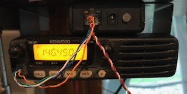

Basic Info.
Frequency: 146.45000
Tone: 146.2
County: Brookings
Grid: EN14QM
Use: OPEN
Op Status: ON-AIR
Coverage:
25 mi radius.
Features: E-Power, Solar
Analog Bandwidth: 25.0 kHz
Commands: DTMF ##01 - Ping (should respond with 2 beeps)
Equipment
- Transceiver: Kenwood TM-281A
- Repeater Controller: Argent Data Systems ADS-SR1
- Antenna: J-Pole up 40 ft.
Images

Contact: atmoechnig@gmail.com
Last Updated 8/28/2021